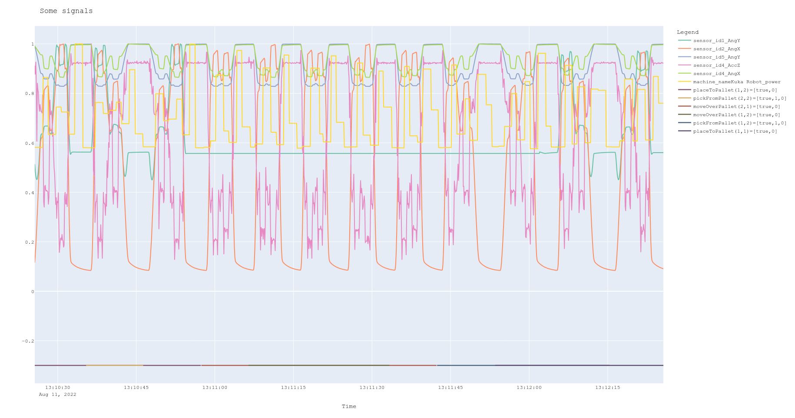
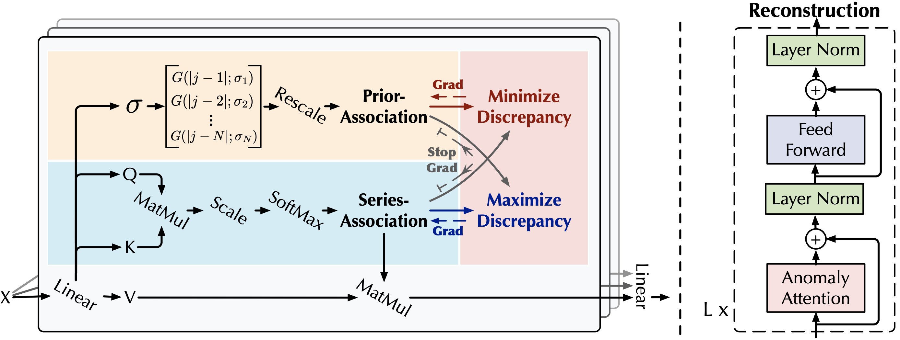
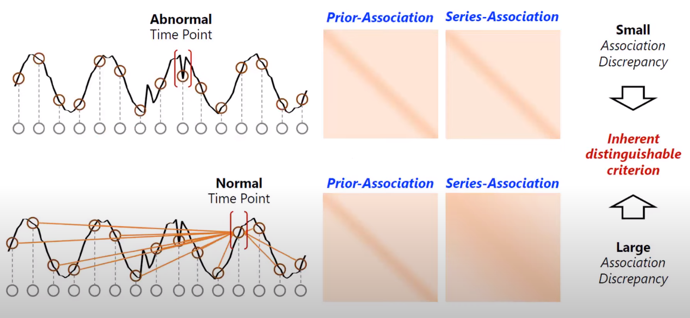
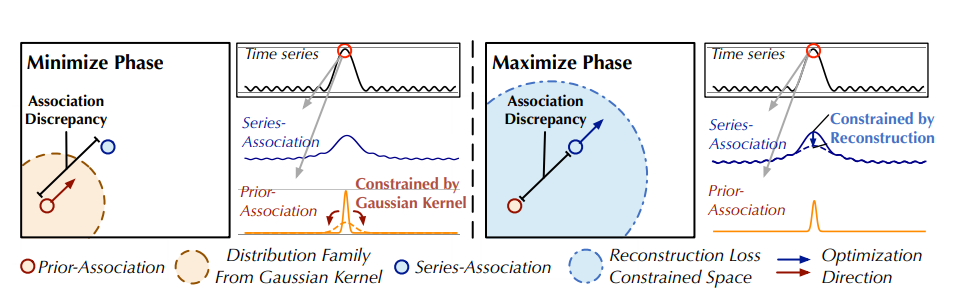
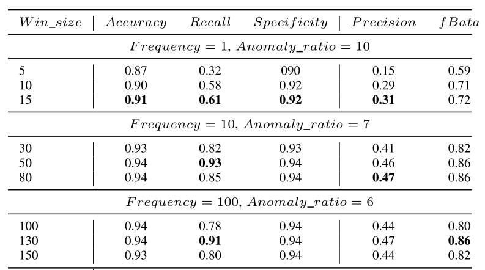
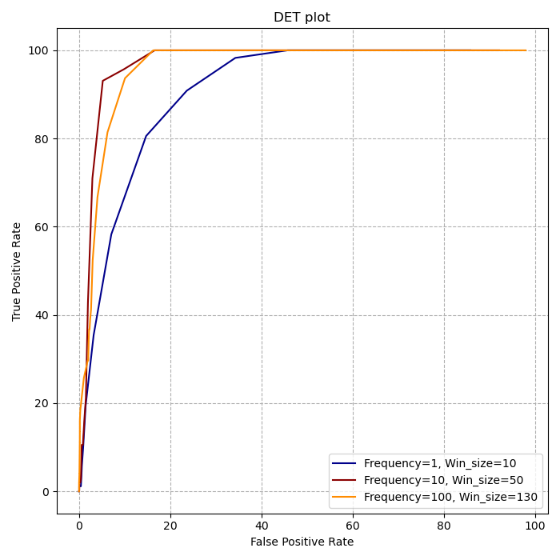
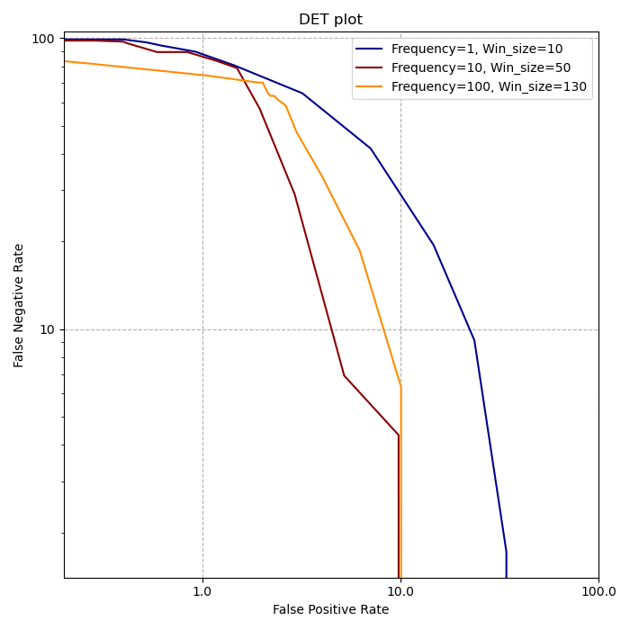

Kuka-V1 Robot Anomaly Detection Using Transformer and Graph Attention Models
1. Overview
This project addresses unsupervised time-series anomaly detection for robotic sensor data. Robots often produce anomalous behaviors that can lead to failures, and the ability to detect such behaviors is crucial for achieving high levels of autonomy. We implement and extend the Anomaly Transformer architecture for detecting anomalies in Kuka-V1 robot sensor readings.
The key challenge in unsupervised anomaly detection is that anomalies are rare and hidden among vast normal time points, making labeling expensive and impractical. Our approach learns informative representations from complex temporal dynamics and derives a criterion that distinguishes rare anomalies from normal behavior.

Time-series data captured by different robot sensors showing seasonal patterns and anomalous behavior.
2. Problem Statement
Given a time series $X$ denoted by a set of time points $\{x_1, x_2, \ldots, x_N\}$, where $x_t \in \mathbb{R}^d$ represents $d$ sensor measurements at time $t$, the unsupervised anomaly detection problem is to determine whether $x_t$ is anomalous without labels.
The general framework outputs an anomaly score for each time point. The criterion for predicting an anomaly is:
$\text{score} > \text{threshold}$
The threshold can be tuned using a validation set or estimated automatically using methods such as Peak-Over-Threshold.
3. Anomaly Transformer Architecture
The Anomaly Transformer renovates the vanilla Transformer architecture with an Anomaly-Attention mechanism. It consists of stacking Anomaly-Attention blocks and feed-forward layers alternately, which enables learning underlying associations from deep multi-level features.

Anomaly Transformer architecture with the two-branch Anomaly-Attention mechanism.
For a model with $L$ layers and input time series $X \in \mathbb{R}^{N \times d}$, the $l$-th layer is formalized as:
$$Z^l = \text{LayerNorm}(\text{Anomaly-Attention}(X^{l-1}) + X^{l-1})$$ $$X^l = \text{LayerNorm}(\text{Feed-Forward}(Z^l) + Z^l)$$
The Anomaly-Attention has a two-branch structure with initialization:
$Q, K, V, \sigma = X^{l-1}W_Q^l, X^{l-1}W_K^l, X^{l-1}W_V^l, X^{l-1}W_\sigma^l$
3.1. Prior-Association
The prior-association uses a learnable Gaussian kernel to calculate temporal associations with respect to relative temporal distance. The unimodal property of the Gaussian kernel pays more attention to the adjacent horizon:
$$P^l = \text{Rescale}\left(\left[\frac{1}{\sqrt{2\pi}\sigma_i}\exp\left(-\frac{|j-i|^2}{2\sigma_i^2}\right)\right]_{i,j \in \{1,\ldots,N\}}\right)$$
3.2. Series-Association
The series-association branch learns associations directly from raw series to find the most effective associations adaptively:
$S^l = \text{Softmax}\left(\frac{QK^T}{\sqrt{d_{\text{model}}}}\right)$
The reconstruction is computed as:
$\hat{Z}^l = S^l V$

Visualization of prior and series associations showing the temporal discrepancy between normal and anomalous points.
3.3. Association Discrepancy
The Association Discrepancy is the symmetrized KL divergence between prior and series associations. Due to the rarity of anomalies, it is difficult to build non-trivial associations from abnormal points to the whole series, so anomalies' associations concentrate on adjacent time points. This makes the discrepancy inherently distinguishable:
$$\text{AssDis}(P,S;X) = \left[\frac{1}{L}\sum_{l=1}^{L}\left(\text{KL}(P_{i,:}^l \| S_{i,:}^l) + \text{KL}(S_{i,:}^l \| P_{i,:}^l)\right)\right]_{i=1,\ldots,N}$$
Anomalies present smaller Association Discrepancy than normal time points, making it a powerful criterion for detection.
3.4. Minimax Learning
A minimax strategy amplifies the difference between normal and abnormal time points. The total loss function is:
$L_{\text{Total}}(\hat{X}, P, S, \lambda; X) = \|X - \hat{X}\|_F^2 - \lambda \cdot \|\text{AssDis}(P, S; X)\|_1$

Minimax optimization strategy: minimize phase adapts prior to series association, maximize phase enlarges the discrepancy.
In the minimize phase, the prior-association approximates the series-association:
$L_{\text{Total}}(\hat{X}, P, S_{\text{detach}}, -\lambda; X)$
In the maximize phase, the series-association enlarges the discrepancy:
$L_{\text{Total}}(\hat{X}, P_{\text{detach}}, S, \lambda; X)$
The final anomaly score combines the normalized association discrepancy with reconstruction error:
$$\text{AnomalyScore}(X) = \text{Softmax}(-\text{AssDis}(P,S;X)) \odot \left[\|X_{i,:} - \hat{X}_{i,:}\|_2^2\right]_{i=1,\ldots,N}$$
4. Our Contribution: Novel Evaluation Algorithm
The original Anomaly Transformer paper uses point-wise anomaly detection with window sizes having stride equal to the window size. Since the anomalies of the Kuka robot are contextual (spanning multiple consecutive points), we developed a novel evaluation algorithm using sliding windows with stride of 1.
4.1. Window-Based Scoring
Given input data sequence $\{x_1, x_2, \ldots, x_N\}$ where $x_t \in \mathbb{R}^d$, we split the data with window size $W_s$ and stride $S$. The transformed data $\tilde{x}_t$ has length:
$\acute{N} = \left\lfloor\frac{N - W_s}{S}\right\rfloor$
For each window, we calculate the total anomaly score as the sum of individual point scores:
$$\tilde{A}(\tilde{x}_t) = \sum_{i=1}^{W_s} \text{AnomalyScore}(x_i) \quad \forall x_i \in \tilde{x}_t$$
4.2. Evaluation Algorithm
Our algorithm handles contextual anomalies by treating contiguous anomaly segments as single detection units. If any point in an anomaly segment is detected, the full segment is considered correctly identified:
Algorithm: Evaluation Algorithm
Input: Window anomaly scores A(x_t), threshold th, ground truth gt, window size W_s
Output: Confusion matrix
n = 0
while A(x_t) is not None where t = n:
if 1 in gt[n : n + W_s]:
# Find end of contextual anomaly
c = 0
while gt[n + W_s + c] = 1:
c = c + 1
# Check if anomaly detected in segment
if exists t in [n : n + W_s + c] where A(x_t) >= th:
detected = True
else:
detected = False
# Assign predictions for segment
if detected:
for each point in segment where gt = 1:
prediction = True Positive
else:
for each point in segment:
if gt = 1: prediction = False Negative
else: prediction = True Negative
n = n + segment_length
else:
# Normal region
if A(x_t) >= th:
prediction = False Positive
else:
prediction = True Negative
n = n + 1This approach is justified by the observation that the exact time point causing an anomaly does not need to be detected precisely; detecting any point within the anomalous segment is sufficient for practical applications.
5. Results
We evaluated the Anomaly Transformer across different sampling frequencies (1 Hz, 10 Hz, 100 Hz) and window sizes. Since anomaly data is significantly rarer than normal data, we focus on recall and specificity as the primary metrics, with fBeta-score (recall weighted twice as precision) as the main comparison factor.

Anomaly Transformer results with respect to window size and frequency.
Key findings:
- For frequency = 10 Hz, best performance achieved with window size = 50, yielding 93% recall and 0.86 fBeta-score
- For frequency = 100 Hz, best performance with window size = 130, achieving 91% recall and 0.86 fBeta-score
- Higher frequencies (100 Hz, 200 Hz) require proportionally larger window sizes to capture similar time intervals

ROC curve showing model performance across different threshold values.

Detection Error Tradeoff (DET) plot for anomaly detection performance analysis.
6. Conclusion
This project demonstrated the effectiveness of Anomaly Transformer for unsupervised time-series anomaly detection in robotic sensor data. Our novel evaluation algorithm addresses the contextual nature of anomalies in industrial applications, where detecting any point within an anomalous segment is practically sufficient.
The choice of window size and sampling frequency significantly impacts detection performance. For real-world deployment, the ROC curves and DET plots provide guidance for threshold selection when ground truth labels are available. In truly unsupervised settings, the anomaly ratio parameter offers a practical alternative for threshold determination.